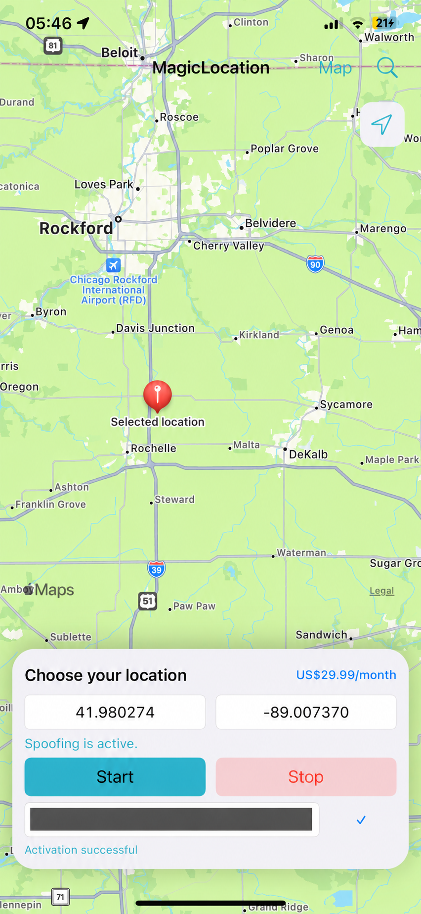
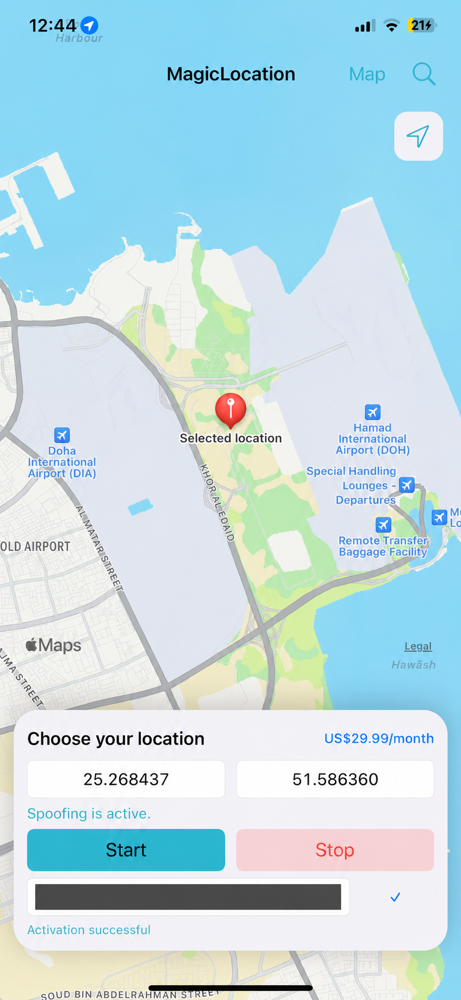

MagicLocation
English
MagicLocation provides full privileges for system-wide location spoofing using deep location spoofing technology. When you select a new location, the clock automatically adjusts to match the selected location’s time zone.
Spoofing remains active even after disabling tweaks through Choicy or any other tool. It does not cause bans in apps because it relies on deep location spoofing technology.
Successfully tested with Snapchat and Find My.
العربية
MagicLocation أداة تتمتع بصلاحيات كاملة لتزييف الموقع على مستوى النظام، وتعتمد على تقنية التزييف العميق. عند اختيار موقع جديد، تتغير الساعة تلقائيًا لتوافق المنطقة الزمنية للموقع المختار.
يستمر التزييف حتى بعد تعطيل الأدوات باستخدام Choicy أو أي أداة أخرى. ولا يسبب التزييف حظرًا في التطبيقات، لاعتماده على تقنية التزييف العميق.
تمت تجربة الأداة بنجاح على Snapchat وفي ميزة العثور على الجوال (Find My).
Screenshots / لقطات الشاشة

